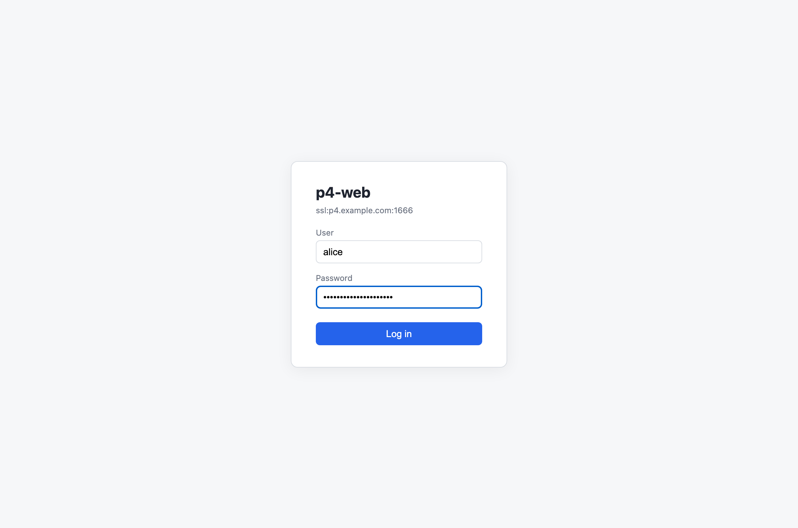

Log in with your Perforce account
Credentials are exchanged for a p4 login
ticket — the password itself is never stored. If your site uses
long-lived tickets, you can paste a ticket value in place of the
password, Swarm-style. The server address shown under the logo is the
instance's P4PORT.
